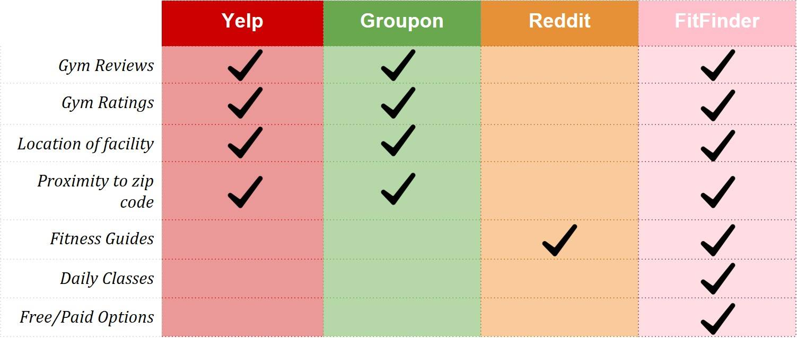

Our Mission
We are dedicated to helping people who want to become fit but have no idea where to start. We provide "Guided Search" to help you explore different ways to fitness!
Why Us
With FitFinder you will have access to diverse fitness resources. No more excuses! Find Free classes near you, highly rated gyms in your area, and fitness guides for you to try at home.
Story Digest
Despite being in such great, athletic shape, we came up with the idea for FitFinder to help us solve our own motivation problems. New York City gets cold in the winter, so it can be hard to stay disciplined about your health and fitness when going for a workout requires wearing a bunch of layers and then coming home all sweaty and bundled up from the gym. One of our founders had the idea for FitFinder on a Sunday afternoon while he was watching TV. His roommate invited him to go to the gym, but Wally’s a Floridian, so the likelihood of him leaving the house when it’s 30 degrees out is slim to none. After scouring reddit, he found a bunch of fitness guides to help him do workouts at home. However, it wasn't very clear whether he should stay at home and do some yoga, or if he should find a studio to join a class. Our other founders also had issues when trying to find gyms and classes in their area that fit their schedules. They all figured: the customer knows what’s best. With this mentality, they set out to make a platform that would help other people who are trying to stay fit select the fitness option that works best for them. By providing choice and variety, users can find whatever suits their needs, and they do not have to rely on the medical knowledge of the founders (or lack thereof).
Meet The Team
Albert Peraza